This site is a fansite, it is NOT officially associated with either Mojang or Microsoft!
What is Minecraft?
Minecraft is a 3D sandbox game that is focused on manipulating
different blocks. These blocks are representative of real-life
elements (if you exclude physics) such as dirt, stone,
oak wood, etc. Build and shape the world wherever your imagination
leads you.
Generating the World
Generate a world by clicking 'singleplayer' on the main menu. There are
many options to tweak your world. For this tutorial, select survival
and use the default settings.
This guide will be done in a singleplayer world. Version
1.19 at the time of writing this guide.
Surviving the First Night
Surviving the first night can be overwhelming with so much to do and night quickly
approaching. Follow this simple to-do list to get started on a successful
first day!
Gather wood
Every Minecraft adventure begins by punching wood (yes punching...),
there is no need to worry about the tree falling over as the wood blocks will float!
Gather about 10 - 15 logs of any kind that are nearby!
Move your character with the keys WASD: 'W' for forward movement, 'A' for
rightward movement, 'S' for backward movement, 'D' for leftward movement.
Move towards a tree, HOLD the LEFT MOUSE MUTTON (LMB) when you directly face a wood block to
"mine" the block. The item will drop and when you are near it you will pick it up.
These controls of mining and moving will remain the same, so it will be important
for you to remember and understand them.
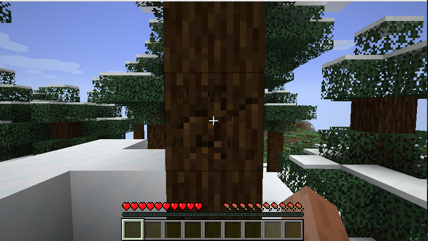
Hold the LMB to "mine" the log from the tree
Craft the crafting table and a wooden pickaxe
You will need to craft a crafting table if you want to craft more advanced items.
Press the 'E' key to open your inventory, press the LMB to place at least one wood log in a crafting
grid. As you can see, the wood log can be used to craft 4 wooden planks.
Take your wooden planks and fill the crafting grid completely. Congratulations you have crafted
the crafting table!
To use blocks, you must drop them into your hotbar (the row of slots at the bottom of your
inventory seperated from the main grid). Depending on the context the RIGHT MOUSE BUTTON (RMB)
will either place the block, consume the block OR interact with the block directly facing you.
Crafting items involves arranging the ingredients in a shape resembling the final product.
Use the crafting table and place TWO wood planks atop of eachother to craft sticks.
Then place TWO sticks and THREE wooden planks in the shape of a 'T' as shown. It looks
similar to a pickaxe!
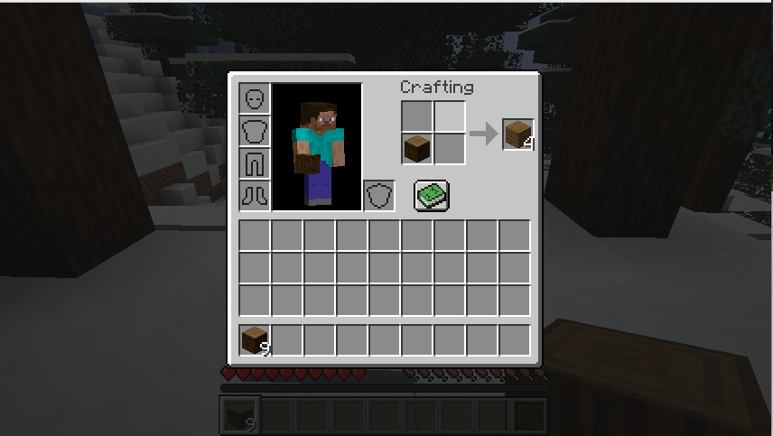
Place a wooden log into the crafting grid to craft a wooden plank
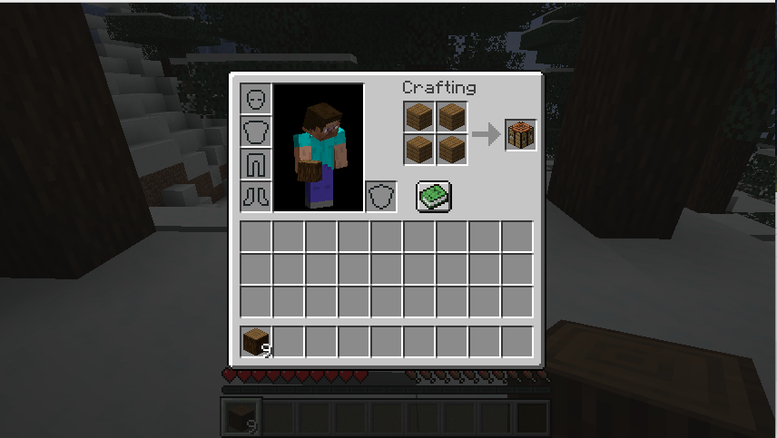
Place FOUR wooden planks into the crafting grid for a crafting table
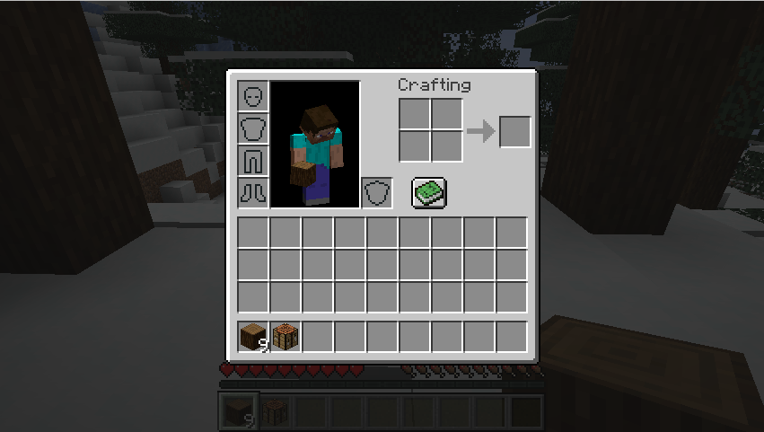
Place the crafting table into your hotbar so that you can place it down
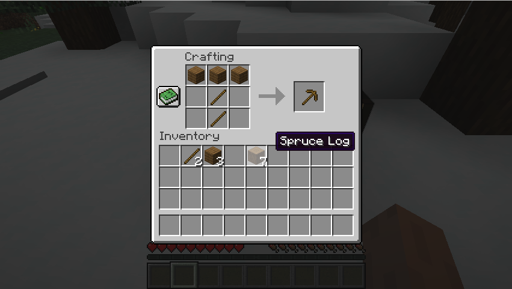
Interact with the crafting grid to make a wooden pickaxe
Craft stone tools and a furnace
Look for an open cave OR simply dig down until you reach grey stone blocks.
Take out that trusty wooden pickaxe you crafted and begin mining the
stone blocks. Aim for roughly 20 - 30 cobblestone blocks!
Once you have collected enough cobblestone, head back to the surface and
follow the recipes shown to craft a set of stone tools! After you should have a stone sword, stone
pickaxe, stone shovel, and stone axe.
Take 8 cobblestone blocks and form a "donut" in the crafting grid to create a furnace, the crafting
table and the furnace are the two foundational blocks to progressing in the game!
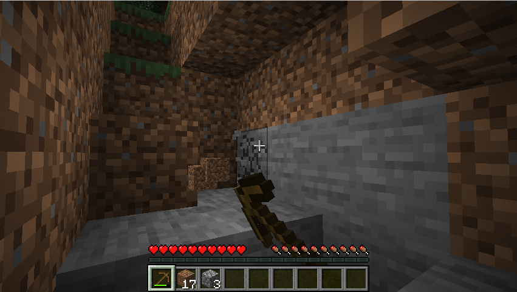
Mine stone blocks to acquire cobblestone
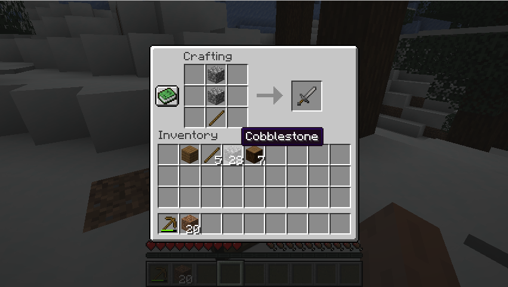
Crafting recipe for a stone sword
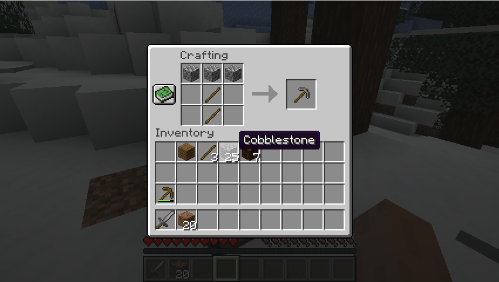
Crafting recipe for a stone pickaxe
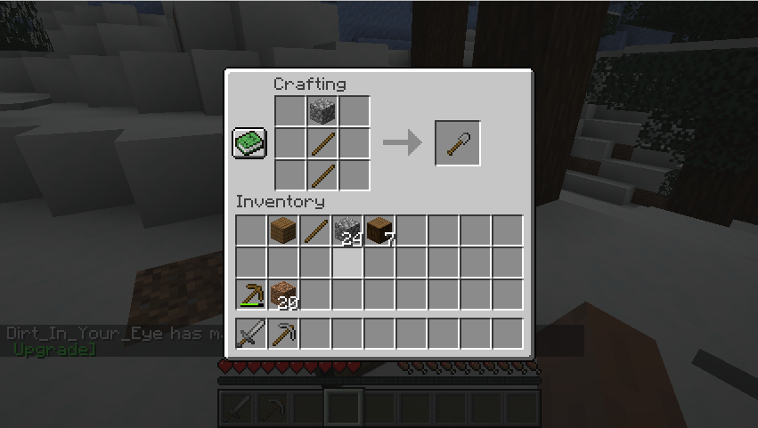
Crafting recipe for a stone shovel
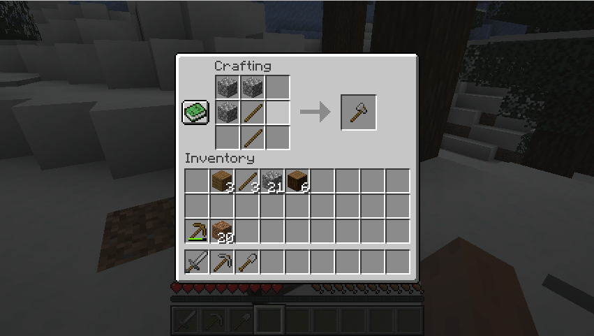
Crafting recipe for a stone axe
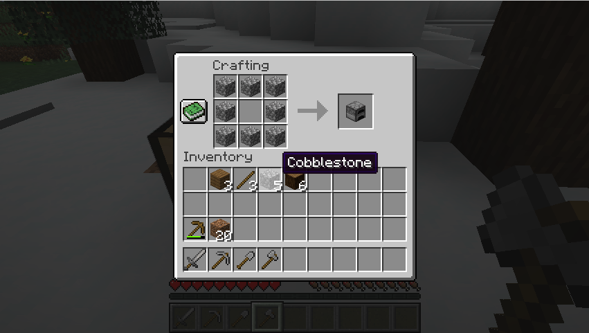
Crafting recipe for a furnace
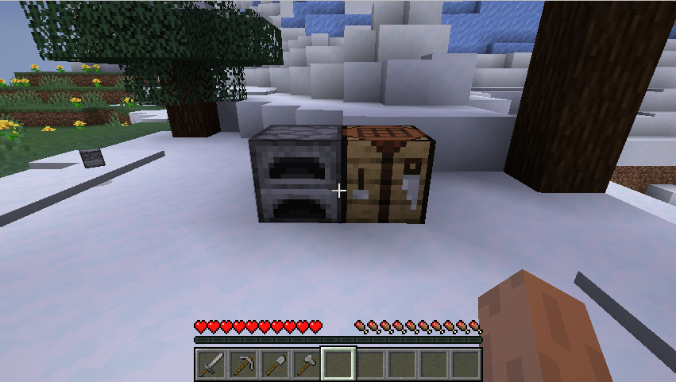
The crafting table and furance are both essential blocks
Hunt for food
You will need a source of food! Look for any animals nearby and hunt them with your stone sword, they
will drop food items and may drop additional blocks (for example, chickens will drop feathers and sheep
will drop wool)
You will need to cook food to get the most out of them. Use your furnace
and place the food item on the topmost slot and a source of fuel (either a wood plank, log or coal)
at the bottommost slot. Your food will begin cooking. Add the food item onto your hotbar to eat
whenever your hunger bar is not full.
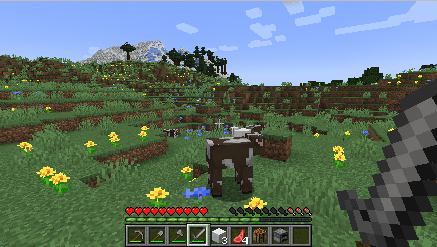
Cows, sheeps, pigs and chickens are great early food sources
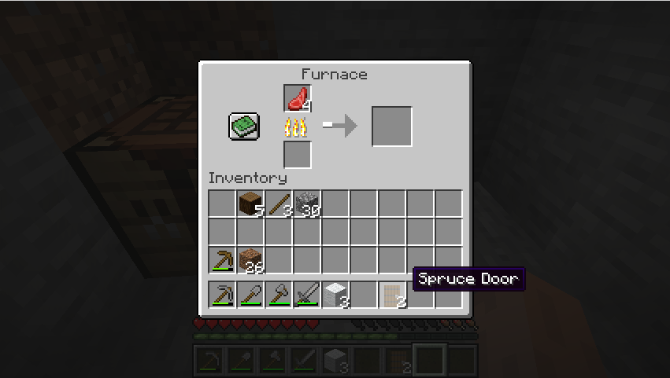
Cooking your food will let you restore more hunger
Find sheep and gather wool
The night presents many dangerous creatures that want to hurt you! It is a good idea to skip the night. Begin
looking for sheep and hunting them down, you will need THREE wool blocks. If it is almost night you
can immediately skip to the next step and reattempt this task the next minecraft day!
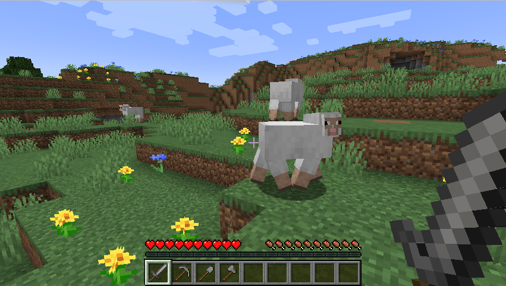
Sheep are especially important as they drop wool for beds
Craft a bed and create a home
If you have enough wool blocks, follow the recipe shown to craft your bed! Place it down somewhere, this will
be where you respawn whenever you health bar reaches zero (remember to interact with it to set it as your spawnpoint).
Immediately create a box by either digging it out the wall of a mountain or shoveling dirt and building the box.
Leave a two block vertical gap, this will be where you place your door. Follow the crafting recipe shown to create a
door block and place it down to fill the gap.
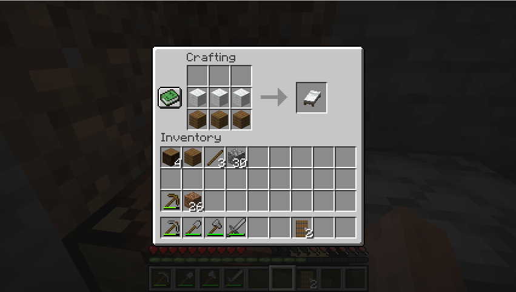
Crafting recipe for a bed
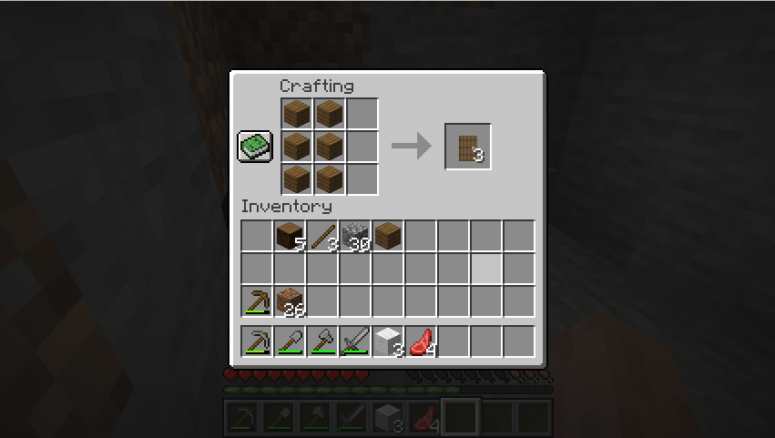
Crafting recipe for a door
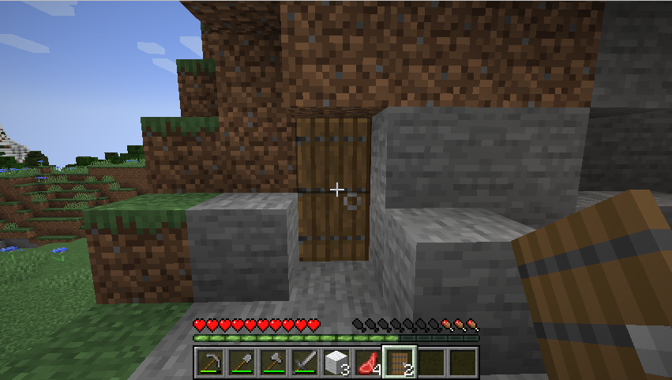
Place a wooden door to allow easier entrance to your house